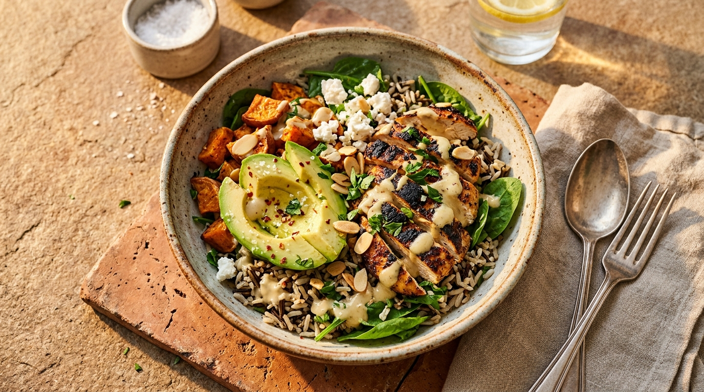
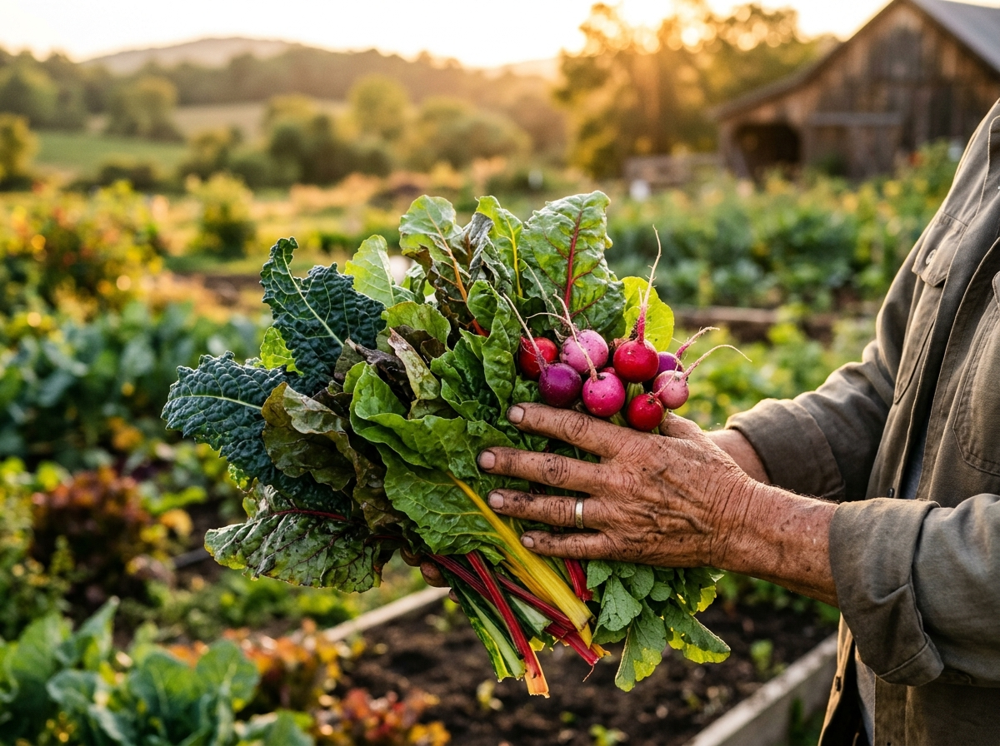
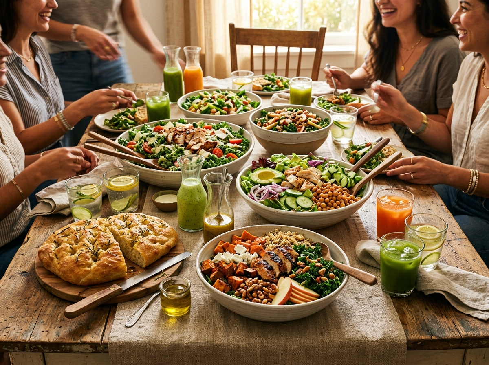

Kenapa Makanan Sehat Kami Berbeda?
Komitmen penuh dari petani lokal hingga meja makan Anda tanpa jalan pintas kimiawi.
100% Sayuran Mitra Petani
Dipetik dari kebun organik Lembang, Cianjur & Malang tanpa bahan pestisida kimiawi sintetis.
Diracik Segar Tiap Subuh
Saus & dressing artisan di-whisk tiap jam 5 pagi, ayam rempah dipanggang oven tanpa bahan pengawet.
Kemasan Ramah Lingkungan
Wadah mangkuk serat jerami alami yang mudah terurai dan alat makan kayu ramah kompos.
Pesan Langsung via WhatsApp
Terhubung langsung ke admin dapur gerai terdekat dengan format pesan otomatis tanpa ribet.
Alur Pemesanan 3 Langkah Mudah
Pesan cepat tanpa perlu registrasi akun berbelit. Semua otomatis terhubung ke WhatsApp dapur!
Pilih Menu & Cek Nutrisi
Pilih mangkuk warm bowl atau salad favorit Anda lengkap dengan rincian kalori, protein, dan serat pangan.
Kustomisasi Saus & Topping
Atur takaran saus (sedikit, sedang, dipisah) dan tambahkan ekstra topping alpukat atau keju kambing lokal.
Terkirim ke WhatsApp Dapur 💬
Klik tombol pesan, WhatsApp otomatis terbuka dengan rincian pesanan rapi siap dikonfirmasi oleh juru masak.
Cerita Mereka yang Menikmati Mangkuk Sehat Kami
“Warm Harvest Bowl-nya juara! Ubi Cilembu oven dan ayam rempahnya pas banget. Sayuran bener-bener renyah segar, beda sama salad biasa. Pesan lewat WA cepat dikonfirmasi!”
“Kemarin pesan paket katering untuk rapat 35 orang di kantor. Kemasan serat jeraminya rapi dan estetik, saus dipisah higienis. Teman-teman kantor pada ketagihan!”
“Shroomami bowl vegan favorit saya di Jakarta! Rasanya umami gurih alami tanpa micin. Bangga banget ada UMKM lokal yang konsisten dukung petani sayur nusantara.”
Makanan sehat berawal dari tanah subur nusantara.
Kami bermitra langsung dengan kelompok tani organik di Lembang, Cianjur, dan Malang tanpa perantara tengkulak untuk memastikan hasil panen dipetik saat kesegaran puncaknya.
Setiap pukul 5 pagi di dapur UMKM kami, tim juru masak mengocok saus artisan tanpa bahan pengawet kimia, memanggang ayam rempah, dan memotong aneka sayuran segar.
Tanah yang sehat menghasilkan pangan yang bernutrisi tinggi. Kami mendukung metode bercocok tanam ramah alam yang menjaga kelestarian ekosistem tanah nusantara.

“Kami percaya bahwa pilihan makanan sehat yang kita santap setiap hari, dari mana asalnya, dan bagaimana dapur UMKM kami mengolahnya dengan penuh ketulusan, memberi dampak nyata bagi kesehatan keluarga dan kemakmuran petani kita.”— MANIFESTO SWEETGREEN INDONESIA

Berkumpul bersama mangkuk bergizi & lezat.
Tersedia mangkuk personal berlabel nama individu atau paket prasmanan ramah lingkungan untuk pertemuan mulai dari 10 hingga 500+ porsi.
Dikirim tepat waktu menggunakan wadah berbahan dasar serat jerami alami yang mudah terurai dan alat makan kayu ramah kompos.
Solusi makan siang bergizi untuk rapat kantor, syukuran keluarga, maupun workshop komunitas dengan poin reward khusus UMKM.